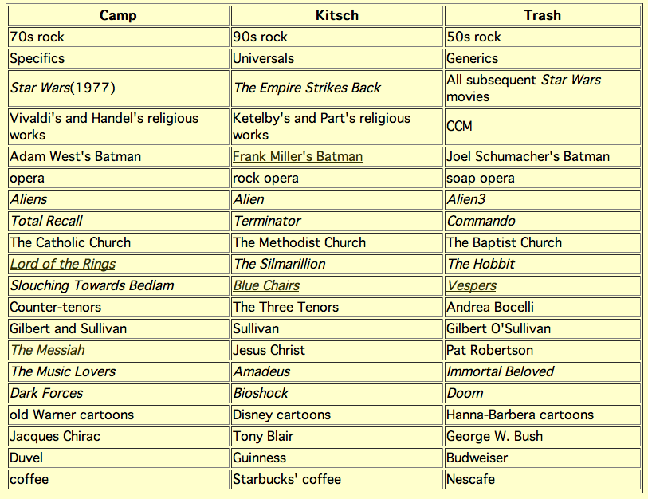

can’t possibly agree with all of these but the tenor one is 100% correct
it says doom is trash
this whole list is trash
This whole list is trash.
In particular, the columns might as well be labeled “good, medium, bad.” (Which is not to say that those judgments would be correct – the taste on display here sure isn’t anything I find admirable – but I think that comes a lot closer to communicating the actual sentiments being expressed in a coherent fashion.) Say what you like about Lord of the Rings and (for God’s sake) Handel’s Messiah, love them or hate them or think they’re mediocre, they’re about as far from “camp” as it’s possible to get.